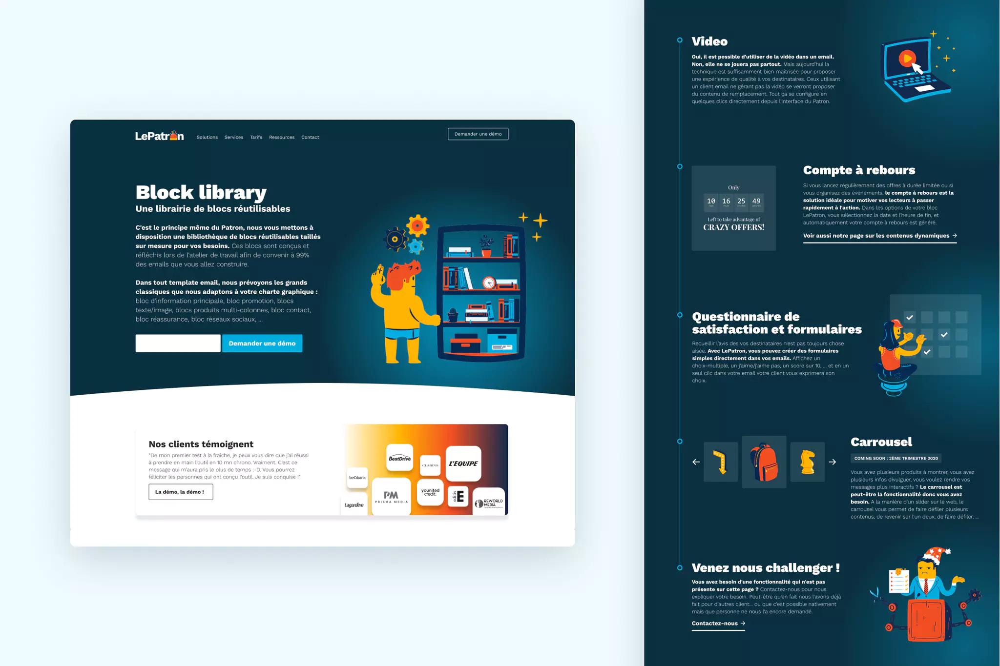
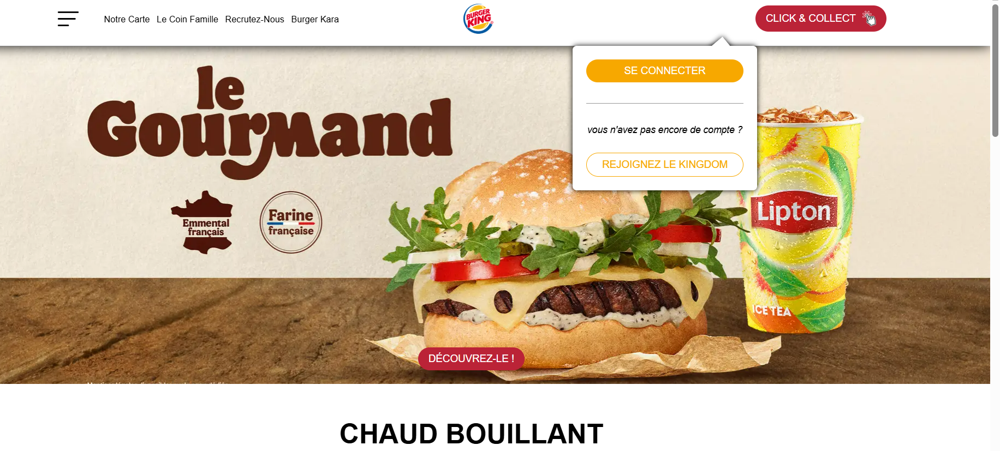
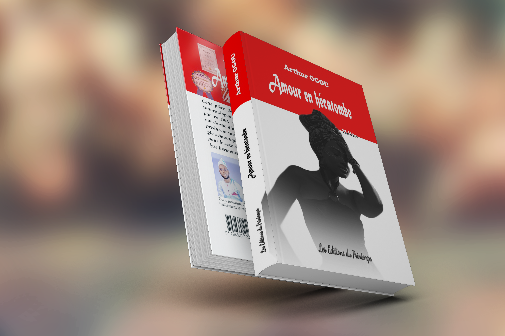

Maintenance informatique
Installation de Windows, installation de logiciels, diagnostic, réparation et optimisation des ordinateurs.
En savoir plus sur la maintenance informatiqueDisponible pour vos projets
Des solutions informatiques, web et graphiques modernes et sur mesure, pour les particuliers, les entreprises et les organisations.
Aimé W. TEPA — maintenancier informatique, web designer et graphiste

Des solutions adaptées à différents besoins dans le domaine de l'informatique et du numérique.
Installation de Windows, installation de logiciels, diagnostic, réparation et optimisation des ordinateurs.
En savoir plus sur la maintenance informatiqueConception d'interfaces, maquettes Figma, création de sites WordPress et amélioration de l'apparence des sites web.
En savoir plus sur le web designCréation de logos, affiches, flyers, roll-up, CV professionnels et visuels pour les réseaux sociaux.
En savoir plus sur le graphismeCréation de pages et de sites web avec HTML, CSS et JavaScript. Compétence en cours de formation.
En savoir plus sur le développement web
À propos
Je suis Aimé W. TEPA, professionnel du digital maintenancier informatique, web designer et graphiste. Je suis actuellement en formation dans le domaine du développement web, avec HTML, CSS et JavaScript.
Je possède environ 6 ans d'expérience en maintenance informatique, 5 ans dans le web design et 4 ans dans le graphisme. Cette combinaison me permet de répondre à des besoins très différents : remettre un ordinateur en état, créer une identité visuelle ou concevoir un site web.
Une sélection de projets réalisés dans différents domaines de l'informatique et du numérique.

Site webWordPress, web design
Projet de site web réalisé avec WordPress.
 Site web
Site web
WordPress, web design
Projet de site web réalisé avec WordPress.

Site webHTML, CSS, JavaScript
Site permettant de consulter les produits et de passer une commande.
 Logos
Logos
Graphisme
Création de logos et d'éléments d'identité visuelle.
 Affiches
Affiches
Graphisme
Création d'affiches pour différents besoins de communication.

AffichesGraphisme
Création des couvertures de livre.
 Dépannage
Dépannage
Maintenance informatique
Diagnostic, dépannage et remise en état d'ordinateurs.
Les outils que j'utilise et mon niveau dans chaque domaine.
Maîtrise
Maîtrise
Niveau intermédiaire
En formation
Vous avez un projet informatique, graphique ou web ? Je suis disponible pour échanger avec vous.
Me contacter